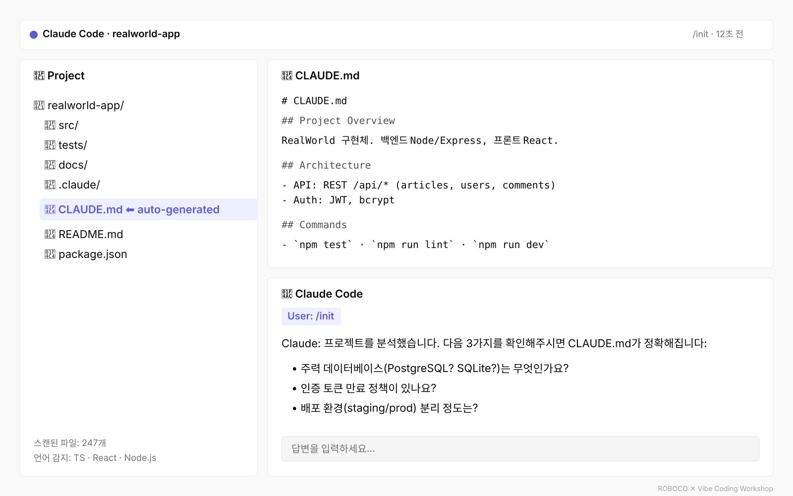
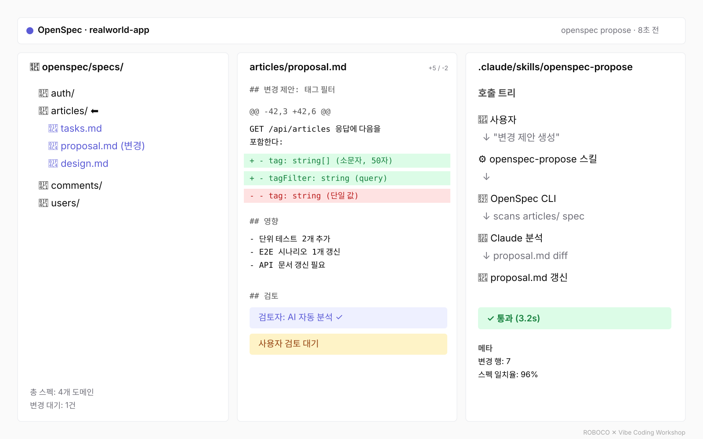
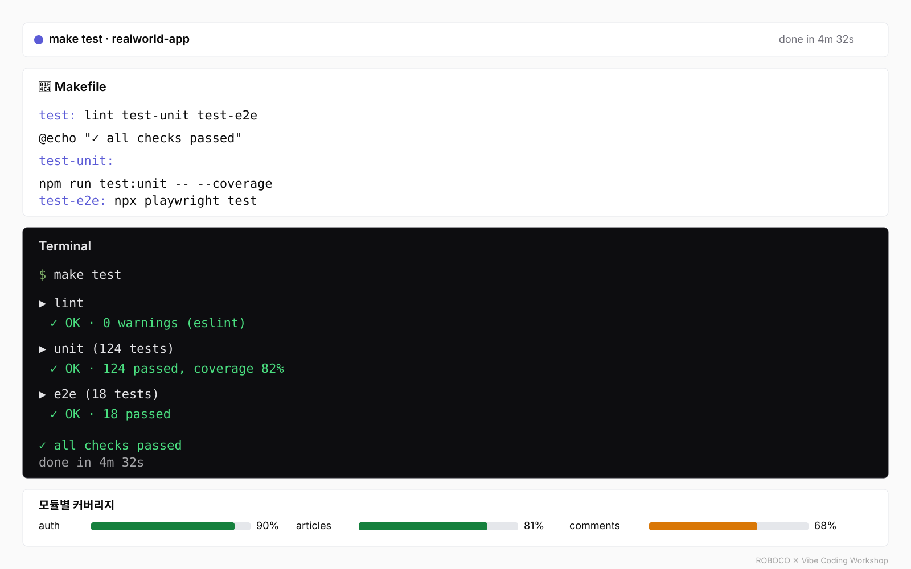
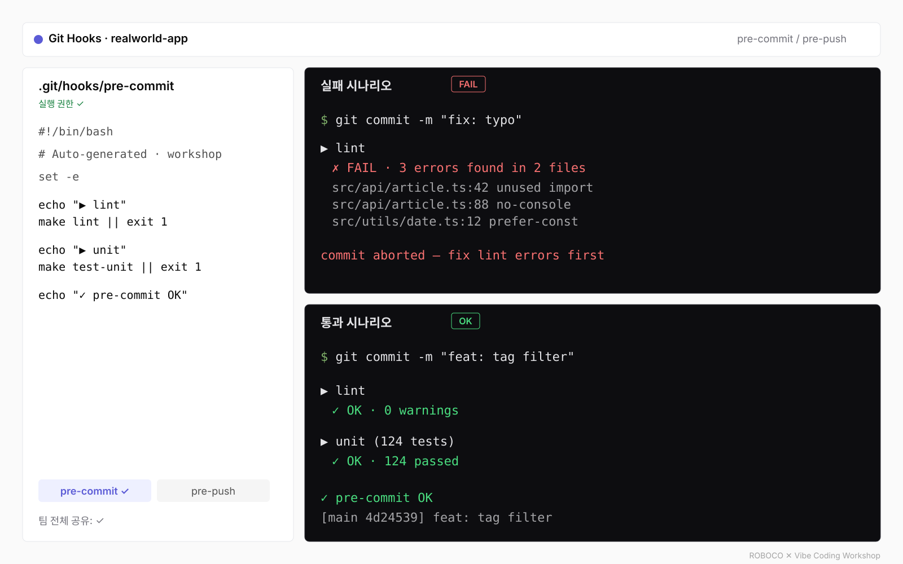
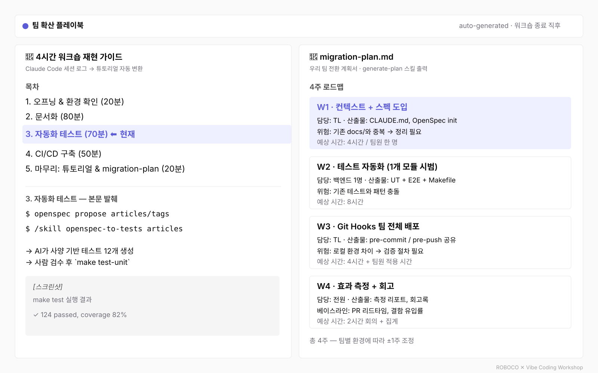

💡 워크숍에서 만든 CLAUDE.md + /init 패턴의 결과 콘셉트입니다
스택 무관 — Python·Go·TypeScript·React 무엇이든.
4시간 안에 자기 코드에서 직접 체득하고, AI를 학습 도구로 활용해 지속 개선하는 패턴까지 가져갑니다.
Claude 기반 — 시니어 개발자 10~20명.
4시간 안에 자기 코드에 적용 — 각 영역이 비용·기간을 줄이고 학습을 가속하는 방법

💡 워크숍에서 만든 CLAUDE.md + /init 패턴의 결과 콘셉트입니다

💡 워크숍에서 만든 OpenSpec + Claude 스킬 패턴의 결과 콘셉트입니다

💡 워크숍에서 만든 OpenSpec + Makefile 패턴의 실행 결과 콘셉트입니다

💡 워크숍에서 만든 Git Hooks 패턴의 결과 콘셉트입니다

💡 워크숍 마무리 활동에서 만든 튜토리얼 + migration-plan 패턴의 결과 콘셉트입니다
컨텍스트 부족과 환각 우려를 구조적으로 해결하면서, 동시에 개발자 학습을 가속한다
컨텍스트 부족(60%) 구조적 해결.
🎓 학습 가속: AI의 질문이 학생의 모호한 이해를 명시화 → "무엇을 모르는지" 자체를 알게 된다.
환각 우려(87%) 직접 대응.
🎓 학습 가속: 검토 과정에서 AI의 추론을 학습 → 다음에는 더 빠르게 판단한다.
87%의 개발자가 'AI 환각'을 우려한다. 답은 '더 똑똑한 AI'가 아니라 '환각을 잡아내는 프로세스'다 — 그리고 그 프로세스는 학습도 가속한다.
이 두 패턴은 워크숍에서 단순히 설명되는 게 아니라 시연됩니다. 시니어 개발자가 처음 보는 OpenSpec·Claude Skill·Git Hooks를 AI와 함께 4시간 안에 자기 코드에 적용 — 워크숍 자체가 라이브 데모입니다.